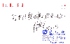

|
|
| 当前位置：电脑报电子版 > 1999 年 > 48 期 > 大众网络 > 根宝上网 |
| 《 根宝上网 》 |
| “横下一条心、一定要出线！”谁都不会忘记这句掷地有声的话是谁说的。在中国足球界，能这样不给自己留后路的，恐怕只有徐根宝一个人；失败了自己坦然辞职，不诿过于人，这是徐根宝的一贯作风。所以，媒体喜欢用“风风火火”来描述这位中国足球界的硬汉子。 3月21日，’99赛季中国甲A联赛开战。徐根宝统率的曾在上年度创下多项国内甲A记录并且提前4轮夺冠的“老牌劲旅”大连万达实德队的成绩一泻千里，不要说球队计划中献给大连建市100周年的厚礼成了镜花水月，甚至有人开始怀疑大连队是否能继续留在甲A。于是，大连球迷掀起了一浪又一浪的“倒徐”风波。 万般无奈之下，经历了无数次风雨坎坷的徐根宝于1999年5月18日黯然离职回到了家乡上海。从此，根宝就似乎从媒体热潮和球迷视野中销声匿迹了…… 然而，徐根宝终究是不甘寂寞的，大约两个月以前，在全国人民都关注着中国国奥队能否在本世纪末实现冲出亚洲的宏愿时，徐根宝的网站——http://www.genbao.com悄然开张了，不用说，这是一个有关足球的网站，它的名字就叫“根宝足球俱乐部”。 11月27日，申城正遭遇着入冬以来的第一股寒流，风夹着雨，让人感觉冷到了骨子里。直到走进根宝的网站，记者才总算大大地舒了一口气，温暖干燥的空气、简洁有序的陈设，与外面相比迥然是两个世界。根宝在他的私人办公室里愉快地接待了记者。一反电视镜头里的威严形象，穿着一身休闲服装、戴一副眼镜、笑容可掬的他像是在休假，“《电脑报》我知道的，那是一张名气很大的报纸。”根宝说。显然，正在进军网络世界的他对各路IT媒体，已经倾注了比以前更多的关心。  说起当“网主”的感受，徐根宝略带着点自嘲地说：“现在我跟你们一样当起记者、编辑了，当初没想到会这么忙、这么辛苦。没想到！没想到！” “在大连当教练的那段日子，我几乎谢绝了所有的社交活动，绝大部分时间都在训练基地。辞职以后，才有了时间和精力走访各界的老友，其中包括我的好友——吴征、杨澜夫妇（杨澜：原中国中央电视台、原凤凰卫视知名节目主持人；吴征：天地数码公司执行董事及行政总裁——记者注），当时吴征就提议我办一个足球网站……” 恰巧，徐根宝的弟弟是从事电脑相关行业的，在IT界也颇多交游，于是这件事情就顺风顺水了。 徐根宝说：“当时找我合作的单位很多，方案有两种，一个是一开始就搞得很大；另外一个是小规模起步，将来再慢慢发展。”根宝接着说：“但是当时我对电脑和网络还没有现在这样的了解。接触电脑是在大连执教期间，朋友送给我一台笔记本电脑开始的，主要是用电脑整理一些资料，偶尔也上上网了解一些国外的情况。”于是，根宝选择了比较稳妥的小规模起步模式。谈话中，根宝再三提到众望科技的顾纪诚先生和周一珍女士，说他们在网站的开张和运行中倾注了大量的心血和热情。 经过两三个月的紧张筹备，网上的“根宝俱乐部”开张了。根宝坦言，他的网站开得有些仓猝，主要是为了赶在10月29日——国奥队在上海参加“2000年奥运会亚洲区预选赛”9强赛中韩第二轮对抗的前一天。网站的地点就选在中国国奥队的主场——上海8万人体育场一路之隔的一座大楼里，透过窗户，体育场里的座位都可以看得清清楚楚。 10月28日，网站开张的当晚，也就是中韩之战的前夜，徐根宝第一次通过网络向球迷和广大网友分析了主客双方实力。紧接着的10月29日，中韩大战当夜，徐根宝一边关注着身边的赛况进程，一边进行了一针见血的网上评球，受到球迷的热烈欢迎。10月30日，中韩大战翌日，特地从英伦回国，关注国奥队赛事的中国国家足球队队长范志毅受徐根宝的邀请，在网上首评国奥队的表现。根宝网站，搞得热热闹闹，网上的根宝，依然风风火火。 在网络上与球迷和各界网友交流的广度和深度，是徐根宝始料未及的。从此，徐根宝对于网站的前景和信心更加乐观和坚定了。“我希望通过我的网站，进一步增强足球界、球迷、媒体和有关责任部门之间的交流和沟通。”根宝说。 徐根宝还告诉记者，从大连万达队主教练的位置退下来以后，他一点也没有闲着，除了办成了网站，他还就中国足球联赛6年以来，他在上海申花队、广州松日队、大连万达队的传奇经历写成了《风雨六载》一书，该书即将于12月上旬出版发行。他还去美国考察了一次，另外，他还参加了由上海电影制片厂录制并在全国40多家电视台播放的电视记录片《透视徐根宝》的摄制，这些都是他对中国足球职业化改革之路的反思的组成部分。 徐根宝用鼠标指引记者仔细地浏览了他的网上足球俱乐部里“走近根宝”、“联赛春秋”、“赛场风云”、“小范日记”、“嘉宾有约”和“球迷之家”等几个栏目。一边看，一边解说栏目的设置思路和特点。看得出来，根宝对网站是热情和执着的。 “办了网站，你还会当教练吗？”记者禁不住问道。“办了网站，我就没有精力再当教练了。现在我每天都忙着给自己的网站和《足球》报上的‘根宝足球论坛’写稿子，网上球迷的热情也让我备受感动和鼓舞，我已经编辑整理了很多网上的好帖子推荐给了足球媒体。”说着，他拿出了很多内容取材于网站的报纸。 “那么，你可以把网站的工作更多地托付给助手，而你自己就可以腾出来继续当教练了。”记者建议道。“没有了根宝的网站，就不叫根宝网站了。再说，如果我再当教练，要是输了球，球迷肯定要‘轰炸’我的网站了。”根宝大笑。 走出大楼，回头望望根宝网站的办公室，记者不由得想起了根宝的02足球俱乐部和2002年世界杯足球赛…… |
| 下载本期推荐软件 | 页 首 |
| CPCW网站版权所有，电脑报网站编辑部设计制作发布 |
{kind=link}
{kind=link}